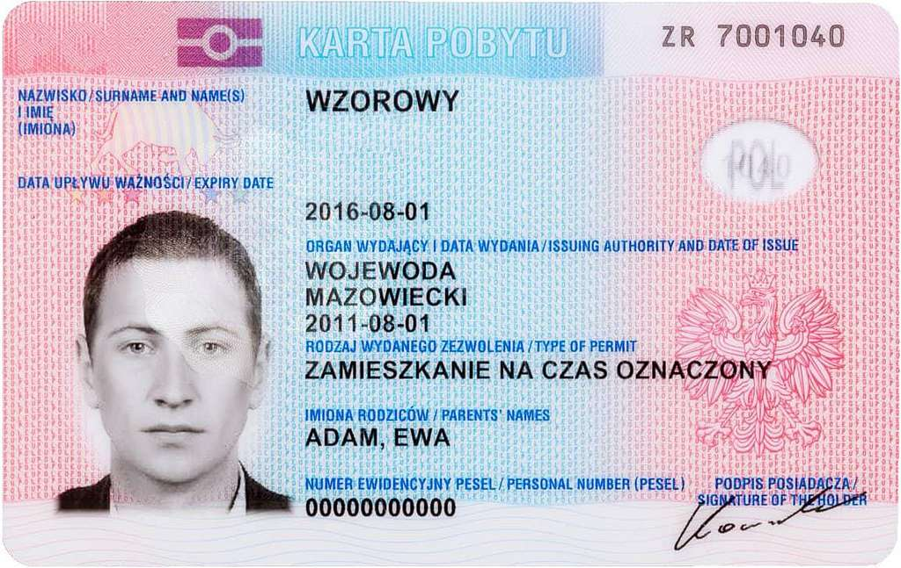
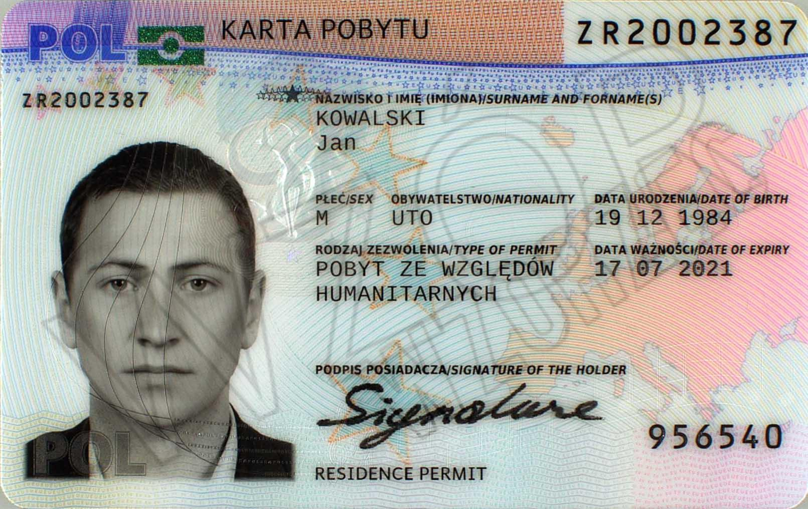
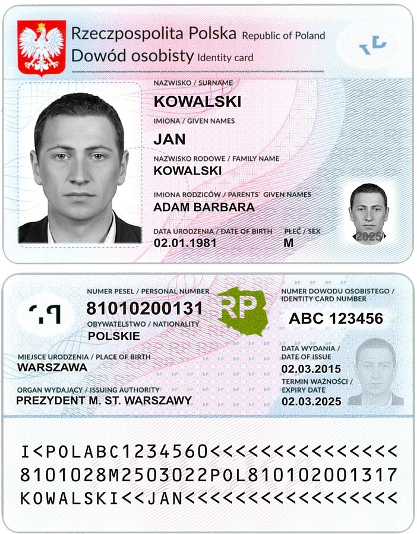

Послуги
- Karta czasowego pobytu
- Karta rezydenta UE
- Karta stałego pobytu
- Obywatelstwo
- Tłumaczenie
- Wymiana prawa jazdy
- Czas pracy
Karta czasowego pobytu - Легальне проживання в Польщі
Хочете залишитися в Польщі довше, ніж дозволяє віза? Karta Czasowego Pobytu дає право жити в країні від кількох місяців до 3 років. Ми допоможемо: підібрати підставу, підготувати документи, супроводити під час подачі та контролювати процес до отримання карти. 
Karta stałego pobytu - Постійне місце проживання
Отримайте право жити в Польщі без обмежень по часу. Karta Stałego Pobytu надає постійний дозвіл та відкриває шлях до громадянства. Ми забезпечимо: перевірку відповідності вимогам, підготовку повного пакету документів та супровід до моменту отримання карти. 
Karta Rezydenta UE - Довгострокове проживання в ЄС
Цей статус дозволяє жити та працювати не лише в Польщі, а й легше переїжджати до інших країн ЄС.
Ми допоможемо: зібрати документи, підтвердити підстави та подати заяву без помилок.

Obywatelstwo Polskie — Польське громадянство
Отримайте повні права громадянина Польщі: безвізові подорожі, робота та проживання в будь-якій країні ЄС. Ми забезпечимо: перевірку вашої ситуації, підготовку заяви та супровід у процесі. 
Офіційні переклади
Професійний переклад документів з української/російської на польську та навпаки з печаткою присяжного перекладача. Ми гарантуємо: швидкі терміни, точність та відповідність вимогам польських установ.
Wymiana prawa jazdy - Польське водійське посвідчення
Обміняйте своє іноземне водійське посвідчення на польське без повторного складання іспиту (за наявності права на це). Ми допоможемо: підготувати заяву, зібрати документи та пройти всі етапи обміну.
Графік роботи
- Понеділок 9-16.00
- Вівторок 9-18.00
- Середа 9-16.00
- Четвер 9-18.00
- П'ятниця 9-16.00
- Субота 10-16.00